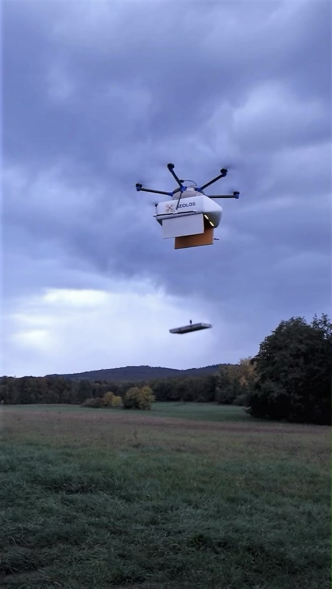
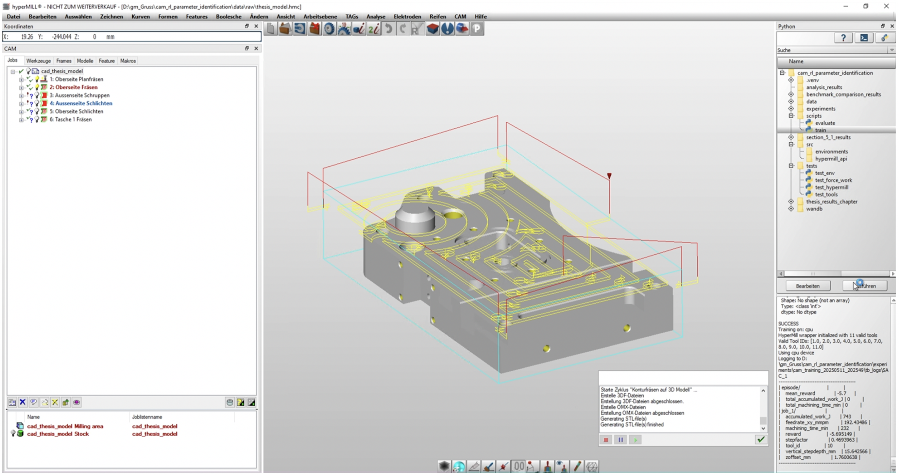

Cornelius Gruss
Combining hands-on robotics development with AI to advance autonomous navigation and manufacturing automation. Currently pursuing MS in Robotics & Autonomous Systems at Boston University, building on mechanical engineering foundation from Technical University of Munich.
Focus Areas: Reinforcement Learning • Autonomous Systems • Manufacturing Automation • Control Systems
Featured Projects
Aeolos Autonomous Delivery Drone System
Feb 2019 – June 2021 | Independent Development
Overview: Engineered a fully autonomous delivery drone with custom winch-based payload deployment system, from concept to working prototype.
Technical Challenges:
- Developing stable flight control algorithms for varying payload weights
- Designing precise winch mechanism for safe payload deployment
- Integrating GPS navigation with obstacle avoidance systems
Achievements:
- Built working prototype using self-designed CNC machined components
- Successful autonomous flights with precise delivery capabilities
- Won 2nd place in Entrepreneurs of Tomorrow Business Plan Competition (2021)

Reinforcement Learning for Manufacturing Optimization
Nov 2024 – June 2025 | Bachelor's Thesis Research
Overview: Developed and evaluated a reinforcement learning framework for automated CAM parameter identification in milling operations, integrated with professional hyperMILL software. Compared state-of-the-art algorithms (PPO vs SAC) across six predefined machining operations.
Technical Challenges:
- Integrating RL algorithms with existing CAM software systems and APIs
- Designing comprehensive reward functions balancing machining time and accumulated work
- Creating robust state and action space representations for complex manufacturing processes
- Ensuring reliable real-time performance in industrial parameter optimization scenarios
Achievements:
- SAC algorithm achieved 24% faster convergence and superior decision stability (σ=0.77 vs PPO's σ=7.46)
- 100% job completion rate with SAC vs 95.20% with PPO across all test operations
- Successfully automated parameter identification that traditionally relies on expert knowledge
- Collaboration with industry partners through CICAM research project for real-world validation

WARR Rocketry - High-Pressure Valve Development
May 2022 – July 2023 | Technical University of Munich
Overview: Led design and development of main valve system for bi-propellant rocket engine as part of 15-person student rocketry team. Worked on novel sleeve-valve design for high-pressure cryogenic applications.
Technical Challenges:
- Designing normally-closed system for fail-safe operation during power loss
- Achieving reliable sealing at pressures up to 65 bar in cryogenic conditions
- Optimizing spring mechanisms for rapid valve actuation under extreme conditions
- Managing tight tolerances for dynamic high-pressure seals in specialized materials
Key Learning:
- Deep experience with high-pressure fluid systems and cryogenic engineering
- Collaborative engineering in complex, multi-subsystem projects
- Critical importance of tolerance analysis and seal selection in extreme environments
- Iteration and testing constraints with expensive specialized components

Research Interests
- Reinforcement Learning in Robotics: Developing learning algorithms that enable robots to adapt and optimize their behavior in complex, dynamic environments
- Manufacturing Automation: AI-driven optimization of industrial processes, focusing on the intersection of machine learning and traditional manufacturing systems
- Autonomous Navigation: Control systems and sensor integration for reliable autonomous operation in unstructured environments
- Human-Robot Collaboration: Developing safe, intuitive robotic systems that can work effectively alongside human operators
Education
Boston University
Master of Science in Robotics & Autonomous Systems
Expected May 2026 • Boston, USA
Relevant Coursework: Deep Learning, Intro to Embedded Systems, Dynamics Modeling of Complex Mechanical Systems
Technical University of Munich (TUM)
Bachelor of Science in Mechanical Engineering
May 2025 • Munich, Germany
Bachelor's Thesis: Grade 1.0/1.0 (4.0/4.0 US equivalent)
Relevant Coursework: Automatic Control, Ethical Robot Systems, Engineering Mechanics, Machine Elements, Additive Manufacturing